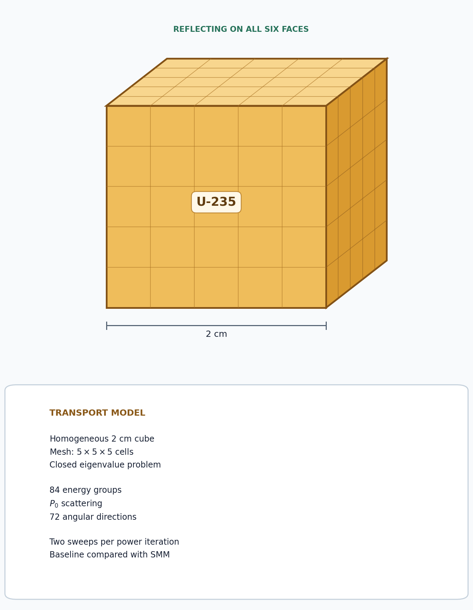
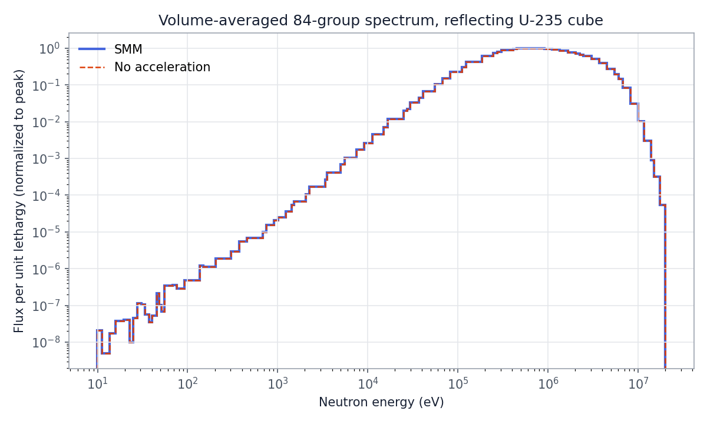

5.3.5. SMM: Second-Moment Method Acceleration

This tutorial compares unaccelerated power iteration with second-moment method (SMM) acceleration for the same multigroup eigenvalue problem. A third solve applies within-group diffusion synthetic acceleration (WGDSA) to the transport iterations instead, for comparison. SMM is currently experimental in OpenSn.
5.3.5.1. Problem setup
The model is the regression-suite SMM problem: a homogeneous 2 cm cube of U-235 with 84 energy groups and reflecting boundaries. The cross sections are loaded from test/assets/xs/u235_84g.h5. Because the domain is homogeneous and closed, it provides a compact correctness check while retaining substantial energy and angular work.
OpenSn’s current SMM implementation requires one groupset, P0 scattering, and save_angular_flux=True. The saved angular flux supplies the second-moment closure used by the low-order diffusion correction.
[ ]:
from pathlib import Path
from mpi4py import MPI
from pyopensn.aquad import GLCProductQuadrature3DXYZ
from pyopensn.context import Finalize
from pyopensn.mesh import OrthogonalMeshGenerator
from pyopensn.solver import (
DiscreteOrdinatesProblem,
PowerIterationKEigenSolver,
SMMAcceleration,
)
from pyopensn.xs import MultiGroupXS
comm = MPI.COMM_WORLD
rank = comm.rank
tutorial_dir = Path(__file__).resolve().parent if "__file__" in globals() else Path.cwd()
num_groups = 84
repo_root = next(
path for path in (tutorial_dir, *tutorial_dir.parents)
if (path / "test/assets/xs").is_dir()
)
5.3.5.2. Build the transport problem
A 5 by 5 by 5 mesh keeps the example compact. The 72-direction product quadrature makes the transport sweeps sufficiently expensive to expose the reduction in work from SMM. All three cases use the same within-group solver settings: a classic Richardson solve limited to two iterations, and therefore two transport sweeps, per power iteration and groupset. The unaccelerated and SMM cases place all 84 groups in one groupset, as SMM requires. The use_wgdsa argument enables WGDSA and splits the
groups into two groupsets: the fast groups 0–32 (0.111 to 20 MeV) and the lower-energy groups 33–83 (9.9 eV to 0.111 MeV). The library has no thermal groups, and no neutrons scatter from the lower groupset back into the fast one, so each power iteration solves the fast groupset and then the lower-energy groupset once. Run the generated script with four MPI processes.
[ ]:
def make_problem(use_wgdsa=False):
nodes = [2.0 * i / 5 for i in range(6)]
mesh = OrthogonalMeshGenerator(
node_sets=[nodes, nodes, nodes]
).Execute()
mesh.SetOrthogonalBoundaries()
mesh.SetUniformBlockID(0)
xs_u235 = MultiGroupXS()
xs_u235.LoadFromOpenMC(
str(repo_root / "test/assets/xs/u235_84g.h5"), "set1", 294.0
)
quadrature = GLCProductQuadrature3DXYZ(
n_polar=6, n_azimuthal=12, scattering_order=0
)
groupset_options = {
"angular_quadrature": quadrature,
"inner_linear_method": "classic_richardson",
"l_max_its": 2,
"l_abs_tol": 1.0e-12,
}
if use_wgdsa:
groupset_options.update(
{
"apply_wgdsa": True,
"wgdsa_l_abs_tol": 1.0e-8,
"wgdsa_l_max_its": 200,
"wgdsa_solver_policy": "auto",
}
)
groupsets = [
dict(groupset_options, groups_from_to=(0, 32)),
dict(groupset_options, groups_from_to=(33, num_groups - 1)),
]
else:
groupsets = [dict(groupset_options, groups_from_to=(0, num_groups - 1))]
return DiscreteOrdinatesProblem(
mesh=mesh,
num_groups=num_groups,
groupsets=groupsets,
xs_map=[{"block_ids": [0], "xs": xs_u235}],
boundary_conditions=[
{"name": name, "type": "reflecting"}
for name in ("xmin", "xmax", "ymin", "ymax", "zmin", "zmax")
],
options={
"save_angular_flux": True,
"verbose_inner_iterations": False,
"verbose_outer_iterations": False,
},
)
5.3.5.3. Compare power iteration, SMM, and WGDSA
The acceleration argument of solve selects the case. The baseline (None) uses no acceleration object. "smm" adds SMMAcceleration with a continuous piecewise-linear diffusion solve. SMM derives a closure from the angular transport solution, solves the low-order eigenvalue problem, and maps its scalar-flux correction back to transport space. "wgdsa" instead preconditions each within-group transport solve with a diffusion correction for within-group scattering; it leaves
power iteration itself unaccelerated. Wall time is split into three phases, each the maximum across ranks: model setup (mesh, cross sections, transport problem, and solver objects), solver initialization, and the power iterations themselves. WGDSA’s diffusion solvers are built with the transport problem, so they count as model setup, whereas SMM builds its low-order system when the solve starts, so that cost falls in the power-iteration phase.
[ ]:
def solve(acceleration=None):
if acceleration not in (None, "smm", "wgdsa"):
raise ValueError(f"Unknown acceleration {acceleration!r}")
comm.Barrier()
start = MPI.Wtime()
problem = make_problem(use_wgdsa=acceleration == "wgdsa")
solver_options = {
"problem": problem,
"k_tol": 1.0e-8,
"max_iters": 300,
}
if acceleration == "smm":
solver_options["acceleration"] = SMMAcceleration(
problem=problem,
sdm="pwlc",
l_abs_tol=1.0e-10,
max_iters=100,
pi_max_its=30,
pi_k_tol=1.0e-8,
)
solver = PowerIterationKEigenSolver(**solver_options)
comm.Barrier()
model_done = MPI.Wtime()
solver.Initialize()
comm.Barrier()
init_done = MPI.Wtime()
solver.Execute()
comm.Barrier()
end = MPI.Wtime()
times = [
comm.allreduce(t, op=MPI.MAX)
for t in (model_done - start, init_done - model_done, end - init_done)
]
return (
problem,
solver.GetEigenvalue(),
solver.GetNumPowerIterations(),
solver.GetNumSweeps(),
times,
)
_, unaccelerated_k, unaccelerated_iterations, unaccelerated_sweeps, unaccelerated_times = (
solve()
)
smm_problem, smm_k, smm_iterations, smm_sweeps, smm_times = solve("smm")
_, wgdsa_k, wgdsa_iterations, wgdsa_sweeps, wgdsa_times = solve("wgdsa")
5.3.5.4. Interpret the metrics
Agreement in \(k_{\mathrm{eff}}\) is the correctness check. Power iterations and sweeps show how strongly each correction reduces high-order transport work. Wall time is machine-dependent; reporting the setup and iteration phases separately isolates the cost and benefit of each acceleration itself.
[ ]:
k_difference = abs(smm_k - unaccelerated_k)
iteration_speedup = unaccelerated_times[2] / smm_times[2]
total_speedup = sum(unaccelerated_times) / sum(smm_times)
wgdsa_k_difference = abs(wgdsa_k - unaccelerated_k)
wgdsa_iteration_speedup = unaccelerated_times[2] / wgdsa_times[2]
wgdsa_total_speedup = sum(unaccelerated_times) / sum(wgdsa_times)
if rank == 0:
print(f"Unaccelerated SMM comparison k-effective={unaccelerated_k:.12e}")
print(f"SMM k-effective={smm_k:.12e}")
print(f"SMM k-effective difference={k_difference:.12e}")
print(f"WGDSA k-effective={wgdsa_k:.12e}")
print(f"WGDSA k-effective difference={wgdsa_k_difference:.12e}")
print(f"Unaccelerated SMM comparison power iteration count={unaccelerated_iterations}")
print(f"SMM power iteration count={smm_iterations}")
print(f"WGDSA power iteration count={wgdsa_iterations}")
print(f"Unaccelerated SMM comparison sweeps={unaccelerated_sweeps}")
print(f"SMM sweeps={smm_sweeps}")
print(f"WGDSA sweeps={wgdsa_sweeps}")
for name, times, iterations in (
("Unaccelerated SMM comparison", unaccelerated_times, unaccelerated_iterations),
("SMM", smm_times, smm_iterations),
("WGDSA", wgdsa_times, wgdsa_iterations),
):
print(f"{name} model setup time (s)={times[0]:.6f}")
print(f"{name} solver initialization time (s)={times[1]:.6f}")
print(f"{name} power iteration time (s)={times[2]:.6f}")
print(f"{name} total wall time (s)={sum(times):.6f}")
print(f"{name} time per power iteration (s)={times[2] / iterations:.6f}")
print(f"SMM power iteration speedup={iteration_speedup:.6f}")
print(f"SMM total speedup={total_speedup:.6f}")
print(f"WGDSA power iteration speedup={wgdsa_iteration_speedup:.6f}")
print(f"WGDSA total speedup={wgdsa_total_speedup:.6f}")
assert k_difference < 1.0e-6
assert wgdsa_k_difference < 1.0e-6
assert smm_iterations < unaccelerated_iterations
assert smm_sweeps < unaccelerated_sweeps
A representative four-process run gives:
Solve |
\(k_{\mathrm{eff}}\) |
Power iterations |
Transport sweeps |
|---|---|---|---|
No acceleration |
2.28043169 |
95 |
190 |
SMM |
2.28043178 |
3 |
6 |
WGDSA |
2.28043176 |
40 |
160 |
The sweep count is the total over all groupsets. The unaccelerated and SMM sweeps each cover all 84 groups, whereas each WGDSA sweep covers either the 33 fast groups or the 51 lower-energy groups. One sweep of each WGDSA groupset therefore equals one sweep of all 84 groups, and the 160 WGDSA sweeps are equivalent to 80 sweeps of all 84 groups.
The SMM eigenvalue differs from the baseline by \(8.4\times10^{-8}\) and the WGDSA eigenvalue by \(7.0\times10^{-8}\). SMM removes about 97% of the power iterations and transport sweeps. WGDSA removes about 58% of both: it needs 40 power iterations, and its sweeps are equivalent to 80 sweeps of all 84 groups. Each two-iteration within-group solve is far from converged in this all-reflecting cube, and WGDSA reduces the within-group error it leaves behind; the correction is applied to the lagged reflected angular fluxes as well as to the scalar flux. The remaining slowly converging error is the fission-source eigenmode, which a low-order eigenvalue correction such as SMM removes far more effectively.
Convergence is judged on \(k_{\mathrm{eff}}\) alone. At this tolerance the volume-averaged spectra of all three solves agree to better than \(10^{-7}\) of the peak, and the unaccelerated and WGDSA fluxes are spatially flat to better than \(10^{-6}\), as expected for this homogeneous, reflecting cube. The SMM flux has not yet reached that shape: after three power iterations its pointwise values in the peak group vary by about 12% around the volume average, and some values in low-flux groups are slightly negative, down to about \(-0.1\%\) of the peak-group average.
The wall-time breakdown below is the median of five four-process runs:
Solve |
Model setup (s) |
Solver initialization (s) |
Power iterations (s) |
Total (s) |
Time per power iteration (s) |
|---|---|---|---|---|---|
No acceleration |
0.058 |
0.001 |
7.806 |
7.865 |
0.082 |
SMM |
0.053 |
0.001 |
7.244 |
7.300 |
2.415 |
WGDSA |
0.200 |
0.001 |
9.270 |
9.471 |
0.232 |
Setup is small in every case. Model setup takes about 0.05 s, or 0.20 s with WGDSA because its diffusion solvers are built with the transport problem. Setup is at most about 2% of any total.
Each SMM power iteration costs about 29 times as much as an unaccelerated one. Its six sweeps take only about \(6\times41\) ms \(\approx0.25\) s; the remaining \(\approx7.0\) s, about 97% of the iteration time, is the low-order work: building the low-order system when the solve starts and, every power iteration, solving an 84-group diffusion eigenvalue problem with up to 30 inner power iterations (pi_max_its). The net speedup is 1.08 for the power iterations and 1.08 overall.
Because the low-order solve has a large, roughly fixed cost, SMM pays off most when transport sweeps are expensive, for example with finer meshes or more directions.
WGDSA is still slower than the baseline. It removes 58% of the power iterations, but each costs about 2.8 times as much because every within-group Richardson iteration adds diffusion solves for all 84 groups, so the whole calculation takes about 1.2 times as long as the baseline (a speedup of 0.83). WGDSA pays off when within-group scattering is what converges slowly, not when the eigenmode limits convergence. Absolute wall times vary from machine to machine, so the speedups, rather than the times themselves, measure the improvement from each acceleration.
5.3.5.5. Visualize the flux spectrum
The cube is homogeneous with reflecting boundaries, so the converged scalar flux is spatially uniform and a spatial map carries no information. The energy spectrum is the informative view. The following code computes the volume-averaged flux in each group. It remains in Markdown so regression tests are unchanged; dividing each value by the group’s lethargy width \(\ln(E_{g,\max}/E_{g,\min})\) gives the plotted flux per unit lethargy.
from pyopensn.post import VolumePostprocessor
average = VolumePostprocessor(problem=smm_problem, value_type="avg")
average.Execute()
group_flux = average.GetValue()[0]

Volume-averaged flux per unit lethargy for the 84-group structure of ``u235_84g.h5``, normalized to its peak. The SMM (solid) and unaccelerated (dashed) spectra coincide. With no moderator, the spectrum stays close to the fission spectrum, peaking near 0.7 MeV, and essentially all of the flux lies above 1 keV.
5.3.5.6. Finalize (for Jupyter Notebook only)
In script mode, PyOpenSn handles finalization automatically. In a Jupyter kernel, finalize OpenSn before MPI.
[ ]:
if "opensn_console" not in globals():
from IPython import get_ipython
if get_ipython() is not None:
Finalize()
MPI.Finalize()